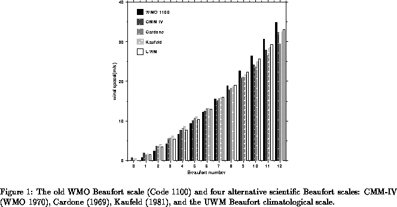
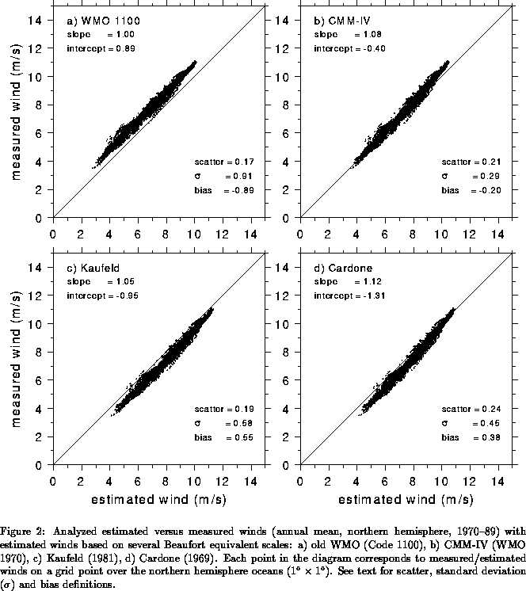

It is well established that the old WMO (Code 1100) Beaufort equivalent scale has systematic biases and that several alternative scales have been proposed. Although all these new scales confirm that the old WMO scale underestimates low wind speeds and overestimates high wind speeds (Fig. 1), they all differ in the precise amount. This section further documents the performance of these scales by comparing anemometer-measured winds with estimated winds based on each scale, in a climatological sense. The scales considered are WMO Code 1100, WMO CMM-IV (WMO 1970), Cardone (1969) and Kaufeld (1981).

Figure 2 plots estimated against measured Northern Hemisphere annual mean winds for the period 1970-1989 for each of the scales described above. Wind speeds estimated with Kaufeld's scale have been converted from 25 m (average anemometer height in Kaufeld's [1981] study) to 20 m, under the assumption of neutral stability. These scatter diagrams present several measures of error and goodness of fit, viz.
where is the standard deviation,
stands
for climatological estimated/measured wind speed at
gridpoint
,
is the total number of gridpoints, and
is the bias.
Figure 2 also shows the slope and intercept of the least
square fit relating
to
in this figure.

Although the old WMO scale yields a slope very close to 1, it is clear from Fig. 2a that it underestimates wind speed with a standard deviation of almost 1 m/s. The CMM-IV Beaufort equivalent scale (Fig. 2b) does a better job for wind speeds in the range 5-9 m/s but tends to underestimate wind speeds greater than 9 m/s and overestimate wind speeds less than 5 m/s. Kaufeld's scale (Fig. 2c) systematically overestimates wind speeds with a standard deviation of about 0.6 m/s and bias of 0.5 m/s. Like Kaufeld, Cardone's scale (Fig. 2d) tends to overestimate wind speeds less than 9 m/s, but does a much better job at higher values of the wind speed; both bias and standard deviations are two-thirds to three-quarters of Kaufeld's.